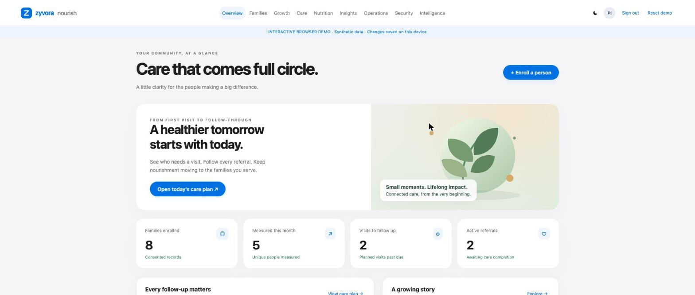
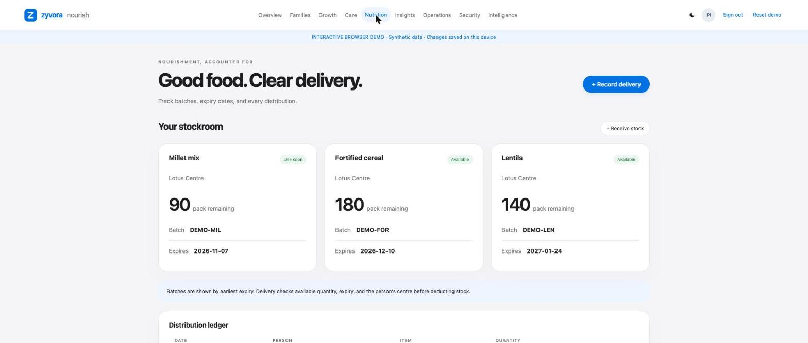
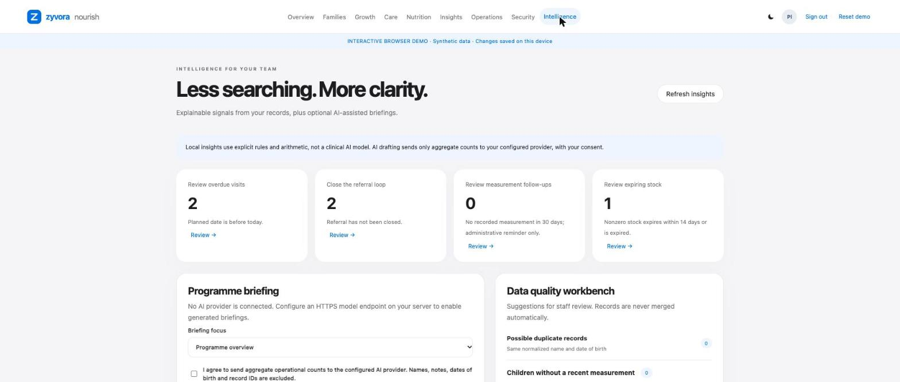

Community nutrition. Thoughtfully connected.
A healthier start. For every life.
Families, growth, referrals, stock and follow-up in one calm, self-hosted workspace.

What it does
Nine workspace sections, fourteen kinds of record.
Built for the people who run feeding centres and field programmes, with consent first and every change audited.
Families
Consent-based enrolment, search, centre assignment and a profile history for every person.
Growth
Dated weight and height records with real history charts. No invented growth standards.
Care
Visits, overdue queues and referrals that can only be closed with a recorded outcome.
Nutrition stock
Batches ordered by expiry, deliveries checked against quantity, expiry and centre, corrections with a reason.
Operations
Appointments, daily attendance, tasks, meal plans with allergens, immunisation history, counselling and equipment.
Insights
Explained follow-up rules, possible duplicates for human review and stock-days estimates from recorded deliveries.
Security
Three roles, tenant scoping, expiring sessions, password changes that sign out every device, and a change audit.
Reporting
Live counts, a CSV summary and a versioned JSON export of the whole workspace.
Optional AI briefings
Off unless you configure a provider. Each briefing needs consent and sends aggregate counts only: no names, notes or IDs.
Screens
Less searching. More clarity.
Screenshots of the synthetic demo.


Self-hosted
Run it where your data should live.
A small Python service with a plain HTML, CSS and JavaScript front end. It runs on SQLite for a single site, or PostgreSQL with versioned migrations, typed tables and a connection pool for more. Docker and Kubernetes manifests are included, and the server never calls a third party unless you enable AI briefings.
Interested? Write to sales@zyvor.dev.
Honest limits
What this is, and what it is not.
- Synthetic data only. The demo shows invented people and stock. It is a browser simulation with no server, no real sign-in and no database.
- Not a clinical system. Insights use plain rules and arithmetic. Nothing here is medical advice, and no clinical, privacy or compliance certification is claimed.
- AI is optional and checked only with a test double. No real model was used to measure accuracy or speed; briefings are drafts for a person to review.
- Independent product. Not affiliated with Poshan Tracker or any government system, and no national records integration is included.
- Source is private. This site holds website content only.